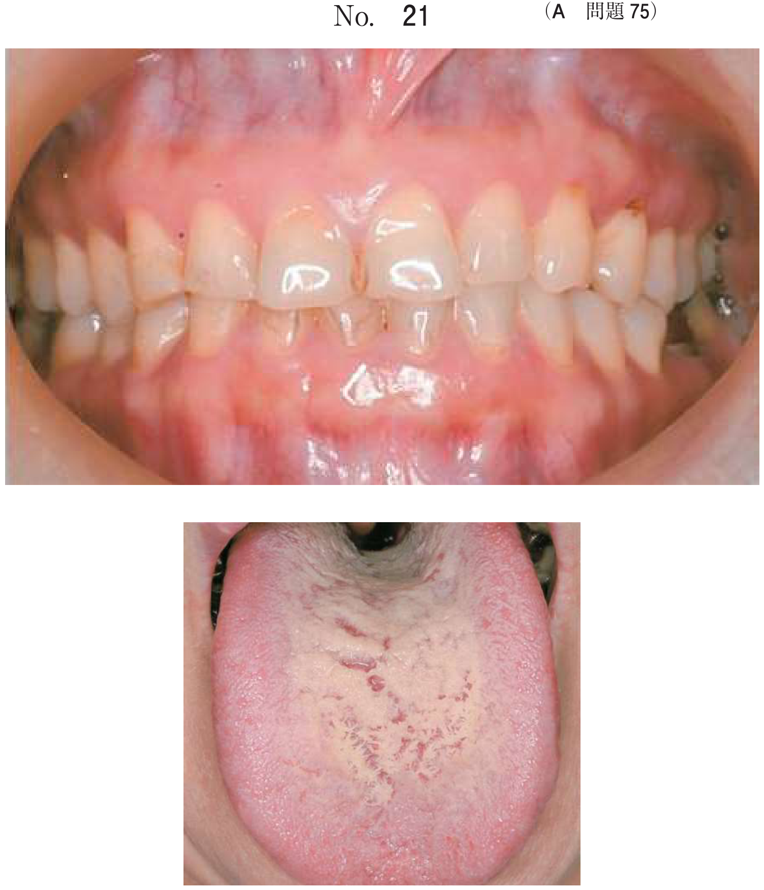
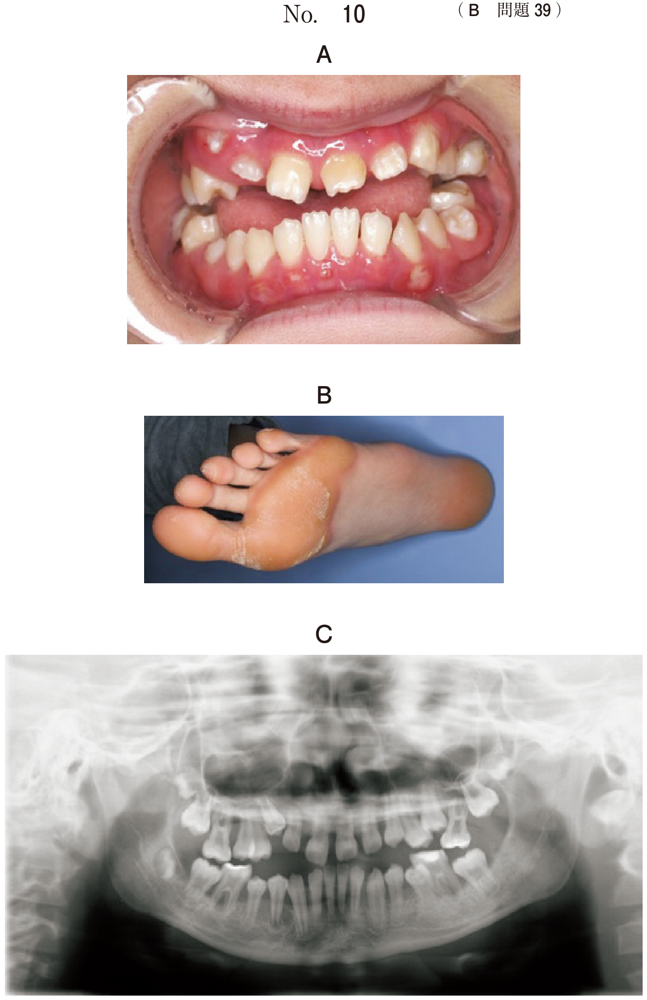

顎骨の腫瘍類縁疾患
- 線維性骨異形成症が最頻出 → X線のすりガラス様（ground glass）像、若年者好発、治療は骨削除（減量術）
- 線維性骨異形成症 + カフェオレ斑 + 性早熟 = McCune-Albright症候群
- セメント質骨異形成症は歯髄生活歯の根尖透過像 → 経過観察（抜髄しない）
腫瘍類縁疾患の一覧
| 疾患 | 特徴 | X線所見 | 治療 |
|---|---|---|---|
| 線維性骨異形成症 | 幼少時発症、無痛性膨隆 | すりガラス様像（境界不明瞭） | 骨削除（減量術） |
| セメント質骨異形成症 | 中年女性、下顎前歯部 | 根尖部の透過〜不透過像 | 経過観察 |
| 巨細胞肉芽腫 | 中心性/周辺性 | 多房性透過像 | 掻爬・摘出 |
| 褐色腫瘍 | 副甲状腺機能亢進症に随伴 | 境界明瞭な透過像 | 原疾患の治療 |
| ケルビズム | 常染色体優性、天使様顔貌 | 下顎両側の多房性透過像 | 青春期以降に消退 |
各疾患の詳細
線維性骨異形成症（fibrous dysplasia）
- 幼少期から思春期にかけて発症、無痛性の骨膨隆や変形を主症状
- 正常骨組織が線維性結合組織によって置換される疾患
- 分類：単骨性（monostotic）と多骨性（polyostotic）
- 顎骨では上・下顎骨単独、あるいは同時に発生
- 時に病的骨折の原因となる
線維性骨異形成症のX線所見
- 初期：境界不明瞭なX線透過像
- 骨化が進むとすりガラス様像（ground glass appearance）
- 骨形成線維腫との鑑別：骨形成線維腫は境界明瞭、線維性骨異形成症は境界不明瞭
線維性骨異形成症の病理
- 線維芽細胞の増殖を背景に、不整な骨梁（woven bone）がみられる
- 骨梁の配列は不規則で、中国文字様パターンを示すことがある
線維性骨異形成症の治療
- 根治的な治療法はない
- 顎骨の変形や咬合不全などの機能障害がある場合 → 外科的切除による減量術（骨削除）
- 骨格の成長終了後に行われることが多い
- 骨の発育停止は青春期以降
McCune-Albright症候群
- 多骨性線維性骨異形成症 + 皮膚のカフェオレ斑 + 性早熟を三徴とする
- 主に女児に発症
- 原因：三量体Gタンパク GsαのGNAS1遺伝子の点突然変異（体細胞モザイク）
- Gsα異常 → シグナル伝達の異常 → 甲状腺ホルモン・副腎皮質ホルモン・成長ホルモンなどの過剰分泌
- 長骨では嚢腫状変化、磨りガラス状変化がみられる
セメント質骨異形成症（cemento-osseous dysplasia）
- 歯根膜由来の反応性病変（真の腫瘍ではない）
- 根尖性セメント質異形成症：中年女性、下顎前歯部に好発
- 限局性セメント質骨異形成症：下顎臼歯部に好発
- 広汎型セメント質骨異形成症：上下顎の広範囲に多発
セメント質骨異形成症のX線所見
- 初期（骨溶解期）：根尖部に透過像 → 根尖病変と誤診しやすい
- 中間期：透過像内に不透過物が出現
- 成熟期：不透過物が増大し、周囲に薄い透過帯
- 歯髄電気診で生活反応あり → 根尖病変との決定的な鑑別点
- 治療：経過観察（抜髄も抜歯も不要）
巨細胞肉芽腫（giant cell granuloma）
- 中心性巨細胞肉芽腫：顎骨内に発生、掻爬・摘出
- 周辺性巨細胞肉芽腫：歯肉に発生（巨細胞性エプーリス）
- 破骨細胞と多核巨細胞を含む肉芽組織で構成
- 20〜30歳代の下顎前歯部に好発
- 病理：骨巨細胞腫とほぼ同一の組織像
- 再発することがある
褐色腫瘍（brown tumor）
- 副甲状腺機能亢進症の随伴症状の一つ
- 副甲状腺ホルモンの過剰分泌 → 骨吸収が促進 → 破壊された部位に巨細胞肉芽腫様の組織が形成
- 組織像は巨細胞肉芽腫とほとんど同一
- 褐色を呈する理由：出血によるヘモジデリン沈着
- 治療：原疾患（副甲状腺機能亢進症）の治療で次第に消退
- 血液検査でCa上昇・P低下で鑑別
ケルビズム（cherubism）
- 下顎骨の対称性膨隆と顔面の変形をきたす常染色体優性遺伝疾患
- 2〜5歳頃の幼児期に発症
- 顎膨隆が増大するにつれ顔面が大きくなり、天使様顔貌（cherubic face）を呈する
- 病理：多核巨細胞が散在する線維性結合組織（巨細胞肉芽腫に類似）
- 治療：青春期以降に自然消退するため、原則として経過観察
- 骨変形が強い場合は、成長終了後に整形術
鑑別のポイント
巨細胞を含む病変の鑑別
| 疾患 | 鑑別のキー |
|---|---|
| 骨巨細胞腫 | 真の腫瘍、長骨骨端部に好発、まれに肺転移 |
| 巨細胞肉芽腫 | 反応性病変、顎骨の前歯部に好発 |
| 褐色腫瘍 | 副甲状腺機能亢進症に随伴、血清Ca↑・P↓ |
| ケルビズム | 常染色体優性遺伝、両側対称性、幼児期発症 |
境界明瞭 vs 不明瞭
| 所見 | 疾患 |
|---|---|
| 境界明瞭 | 骨形成線維腫、セメント質骨異形成症 |
| 境界不明瞭 | 線維性骨異形成症 |
過去問
24歳の女性。下顎左側臼歯部歯肉の膨隆を主訴として来院した。1年前に気付いたが、疼痛がないためそのままにしていたという。初診時の口腔内写真（別冊No.29A）、エックス線画像（別冊No. 29B）、CT（別冊No. 29C）及び生検時の H-E 染色病理組織像（別冊No.29D）を別に示す。 この疾患を併発しやすいのはどれか。1つ選べ。

b Gardner 症候群
c 基底細胞母斑症候群
d 鎖骨頭蓋骨異形成症
e McCune-Albright 症候群
【解説】口腔内写真で下顎左側の無痛性膨隆、X線・CTですりガラス様の骨変化、病理でwoven boneの増生がみられ、線維性骨異形成症と診断できる。線維性骨異形成症が多骨性に発症し、カフェオレ斑・性早熟を伴うのがMcCune-Albright症候群。Gardner症候群は骨腫と関連。基底細胞母斑症候群は角化嚢胞性歯原性腫瘍と関連。鎖骨頭蓋骨異形成症は鎖骨の低形成。
23歳の男性。上顎の腫脹を主訴として来院した。6年前に気付き、徐々に増大してきたという。腫脹は骨様硬である。初診時の口腔内写真（別冊No.14A）、エックス線画像（別冊No.14B）、CT（別冊No.14C）及び生検時のH-E染色病理組織像（別冊No.14D）を別に示す。 適切な対応はどれか。1つ選べ。

b 開 窓
c 骨削除
d 上顎全摘術
e 放射線療法
【解説】若年男性、上顎の無痛性骨様硬の膨隆が徐々に増大 → 線維性骨異形成症を示唆。病理でwoven boneを伴う線維性組織の増生。治療は骨削除（減量術）。良性の骨関連疾患であり、上顎全摘は過剰。放射線療法は適応外。切開排膿は膿瘍に対する処置。開窓は嚢胞に対する処置。
かかりつけ歯科医でエックス線異常像を指摘されて来院した患者のエックス線画像（別冊No.22）を別に示す。自覚症状はなく、腫脹も認められない。下顎両側中切歯は歯髄電気診で生活反応を示した。 適切な対応はどれか。1つ選べ。

b 抜 髄
c 摘 出
d 抜 歯
e 下顎辺縁切除
【解説】下顎前歯部の根尖にX線異常像がみられるが、自覚症状なし・腫脹なし・歯髄電気診で生活反応あり。根尖性セメント質異形成症（セメント質骨異形成症）と考えられる。歯髄が生活しているため抜髄は不要。反応性病変であり経過観察が適切。根尖病変と誤って抜髄してしまう過誤が臨床でも多く、鑑別が重要。
若年者に好発するのはどれか。2つ選べ。
b 類天疱瘡
c 悪性黒色腫
d 線維性異形成症
e 腺腫様歯原性腫瘍
【解説】線維性骨異形成症は幼少期〜思春期に発症し若年者に好発。腺腫様歯原性腫瘍も10〜20歳代の若年者に好発する。白板症は中年以降、類天疱瘡は高齢者、悪性黒色腫は中高年に多い。